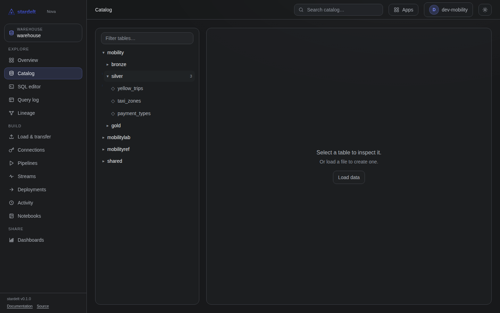
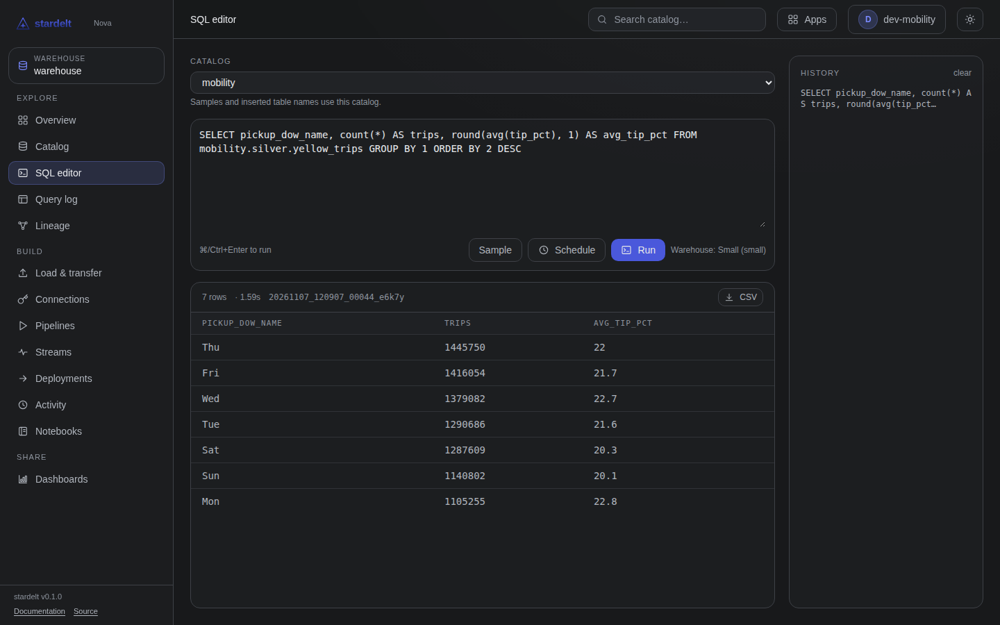
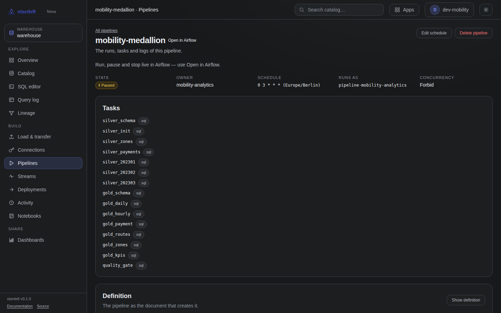
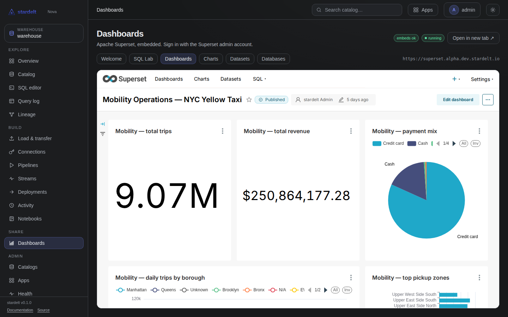

for data teams
From source to dashboard
One platform for the whole path: load, model, query, schedule, share.
The path
01
Get data in
A file, another database or an API — everything lands in the bronze schema of your domain catalog.
Connect a source system
- Keep credentials out of the notebook: ask for them at run time.
stardelt.write_df writes as you, so your table permissions apply.- A connection keeps the secret in the platform's secret store, not in Git.

02
Model in layers
Build each layer from the one before, in SQL.
Bronze, silver, gold
Query where you work
%sql and %%sql run in a notebook cell; the connection is called warehouse.- The token is read on every request, so an open kernel survives a rotation.
- The query runs as you, exactly like
stardelt.sql().
- The SQL editor runs the same statements.

03
Run it every day
Publish the notebook or SQL as a pipeline, and Airflow runs the schedule.
Schedule and watch
- Publish the notebook or SQL as a pipeline; the schedule runs in Airflow.
- Run now, Pause, Resume and Stop are on the pipeline page, checked against your group.
- Maintenance runs on its own: every catalog gets a CronJob that compacts, expires and removes.

Show it
- Open Superset from Nova → Dashboards and sign in with your platform account.
- Each catalog gets its own Superset database; point dashboards at the gold schema.
- A published dashboard is visible only to the groups whose catalogs its charts use.

Not there yet
Ingestion templates, SQL models with tests, and layer tags in the catalog are not available yet.
try it
stardelt.io/guides
Every step of this deck is a guide you can follow.